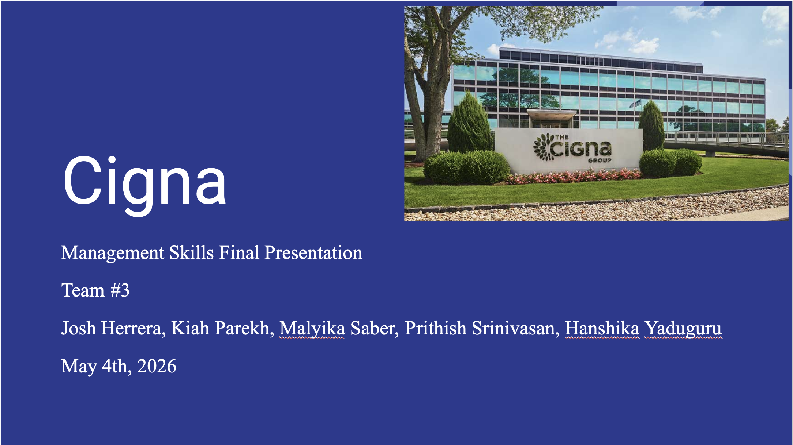

Management Skills Cigna Project
Access Project Here:
Management Skills Cigna Project

This project was a team project I worked on during my Management Skills Class at Rutgers, where I was given the opportunity to interview different levels of managers at Cigna to understand how their organization is structured, their roles, and to discover possible gaps in management style based on different concepts we learned in class. We were able to identify two management-type concerns based on our interviews and were able to come up with two recommendations on how these issues could be resolved. It was a great experience to not only speak to business professionals but use what we learned during our class and implement it into real business situations.